ANTHROPIC_AUTH_TOKEN 需要手动输入你自己的 API Key，不要直接复制占位文本。
Vibe Coding 设计工作流 SOP
从零开始，搭建以 Claude Code 为核心大脑、Figma 为设计交互界面的 AI 驱动开发工作流。涵盖环境配置、模型接入、日常办公提效、设计协作全流程。
概
全文概览
本文档是一份完整的 Vibe Coding 设计与办公工作流 SOP（标准作业程序），帮助你快速搭建以 Claude Code 为核心大脑、以 Figma 为设计交互界面的 AI 辅助工作环境。
所谓 Vibe Coding，是一种新兴的开发范式：你负责做决策和把控方向，AI 负责执行具体的代码编写、设计生成和任务处理——实现"你做决策，AI 做执行"的理想协作模式。
01
安装 MiniMax Agent
安装 Claude Code、CCSwitch、VS Code，配置基础环境变量
02
购买大模型 API
在 DeepSeek 平台购买 API Key，绕过 Anthropic 网关限制
03
配置模型（三种方法）
CCSwitch / 命令行 / VS Code 插件，任选其一接入模型
04
基础办公提效
利用 Claude Code 处理日常办公任务，AI 提效
05
设计工作流 — Figma
为 Claude Code 接入 Figma，实现"大脑 + 双手"协作
06
搭建 Figma MCP
通过 MCP 协议连接 Claude Code 与 Figma，实现设计-代码双向同步
1
安装 MiniMax Agent
在开始 Vibe Coding 之旅前，首先需要安装必要的桌面端工具。推荐使用 MiniMax Agent 作为一站式的环境安装入口，它可帮你自动完成 Claude Code、CCSwitch、Visual Studio Code 的安装，并配置好一系列环境变量，为后续工作奠定基础。
国内官网（含桌面端下载）：
https://agent.minimaxi.com/
桌面端直连下载页：
https://agent.minimaxi.com/download
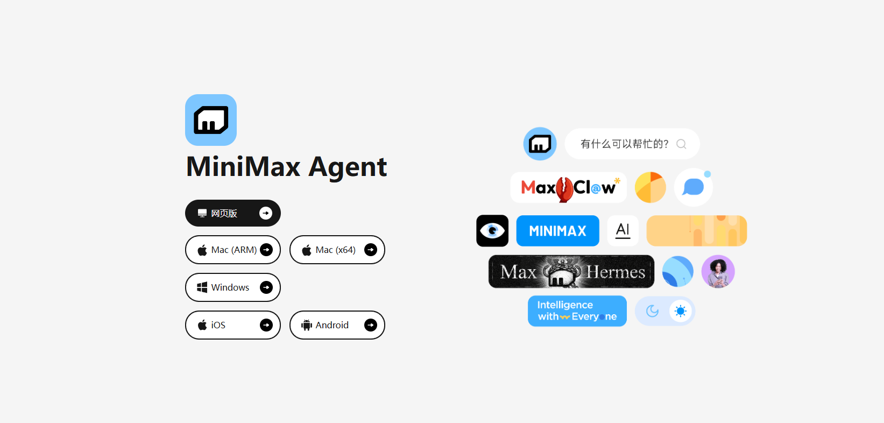
图 1-1：安装 MiniMax Agent
利用 MiniMax Agent 安装 Claude Code、CCSwitch、Visual Studio Code，并配置好一系列环境变量，为后续工作流程做好铺垫。
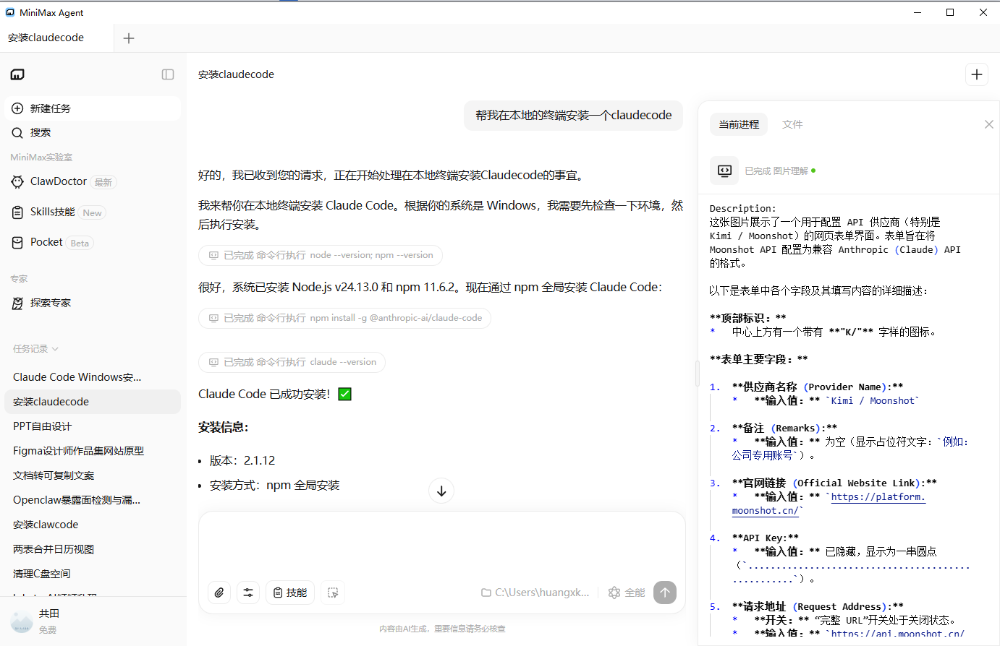
图 1-2：MiniMax Agent 环境配置
2
购买大模型 API
由于 Claude Code 的母公司 Anthropic 对中国大陆存在网关限制，需要购买国内可访问的大模型 API 作为替代方案。推荐使用 DeepSeek 大模型或 Qwen（通义千问） 大模型等国产方案，这一步是为了绕开 Anthropic 内部模型对中国大陆的网关限制。
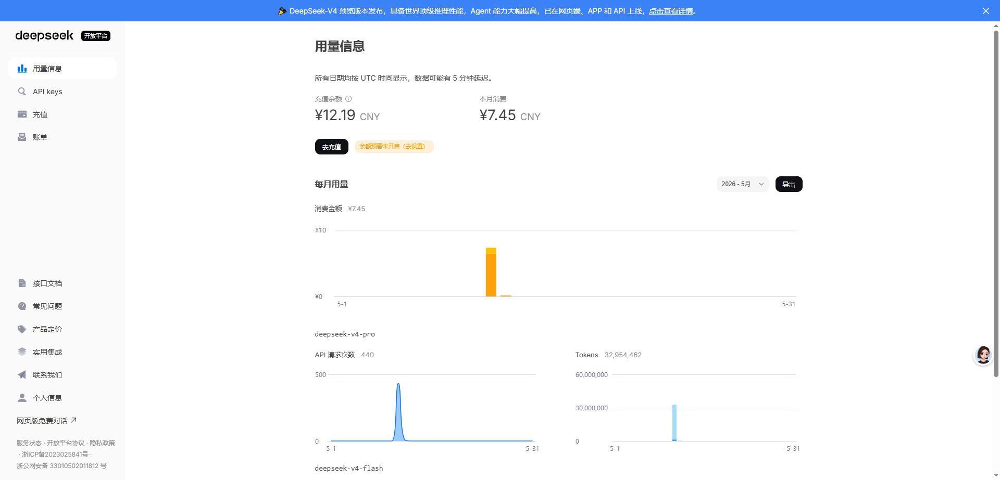
图 2-1：购买大模型 API
官网：https://platform.deepseek.com/
在 DeepSeek 开放平台注册并购买官方 API Key，按量计费，费用极低。
3
配置模型（三种方法任选其一）
安装好一系列基础环境变量后，便可着手配置模型。以下提供三种配置方法，按难度从低到高排列。如果你是新手，直接选择 方法 A（懒人方法） 即可。
方法 A：懒人方法 — CCSwitch 图形化配置
打开 CCSwitch（官网：https://ccswitch.ai/zh/），选择对应的模型供应商，填入对应模型商的 API Key（也就是你自己购买的模型的 Key），保存并运行即可。适合小白，无脑选择。
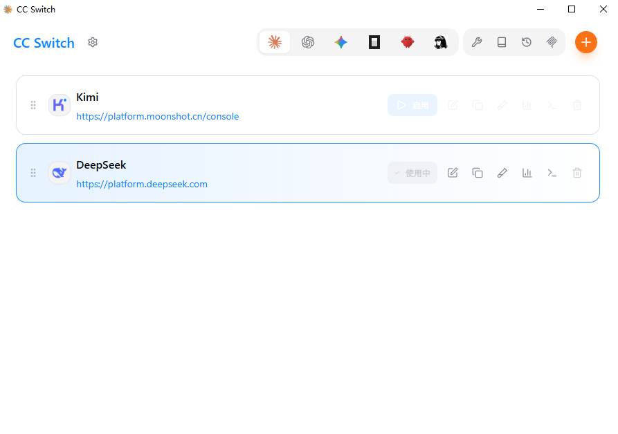
图 3-A1：CCSwitch 界面
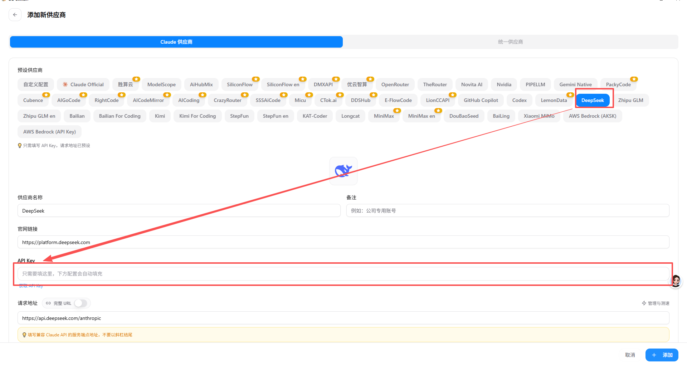
图 3-A2：CCSwitch 配置详情
在红框中填写你购买的 API Key，保存运行即可。打开 Visual Studio Code：
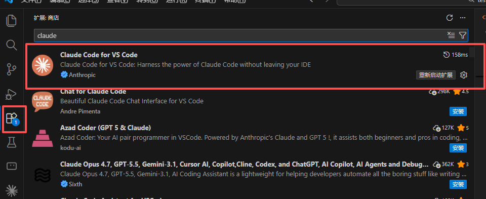
图 3-A3：VS Code 配置界面
在左侧插件市场安装 Claude Code 插件，安装完成后就可以直接使用。
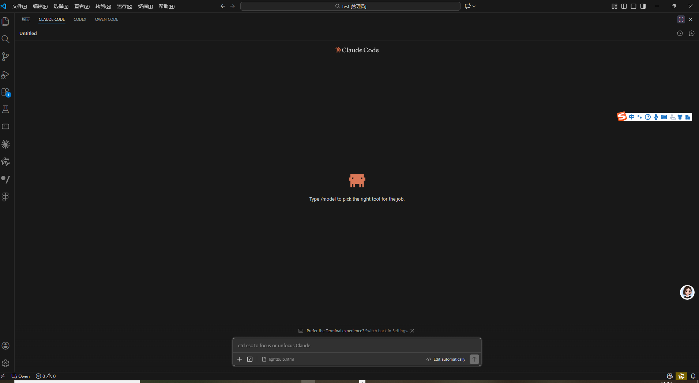
图 3-A4：在左侧插件市场安装 Claude Code
方法 B：进阶方法 — 命令行配置
调用 Windows 终端（Win + X / Win + R → 输入 powershell），并输入以下命令。这里以 DeepSeek V4 为案例：
命令：
PowerShell
$env:ANTHROPIC_BASE_URL="https://api.deepseek.com/anthropic"
$env:ANTHROPIC_AUTH_TOKEN="你的api key"
$env:ANTHROPIC_MODEL="deepseek-v4-pro[1m]"
$env:ANTHROPIC_DEFAULT_OPUS_MODEL="deepseek-v4-pro[1m]"
$env:ANTHROPIC_DEFAULT_SONNET_MODEL="deepseek-v4-pro[1m]"
$env:ANTHROPIC_DEFAULT_HAIKU_MODEL="deepseek-v4-flash"
$env:CLAUDE_CODE_SUBAGENT_MODEL="deepseek-v4-flash"
$env:CLAUDE_CODE_EFFORT_LEVEL="max"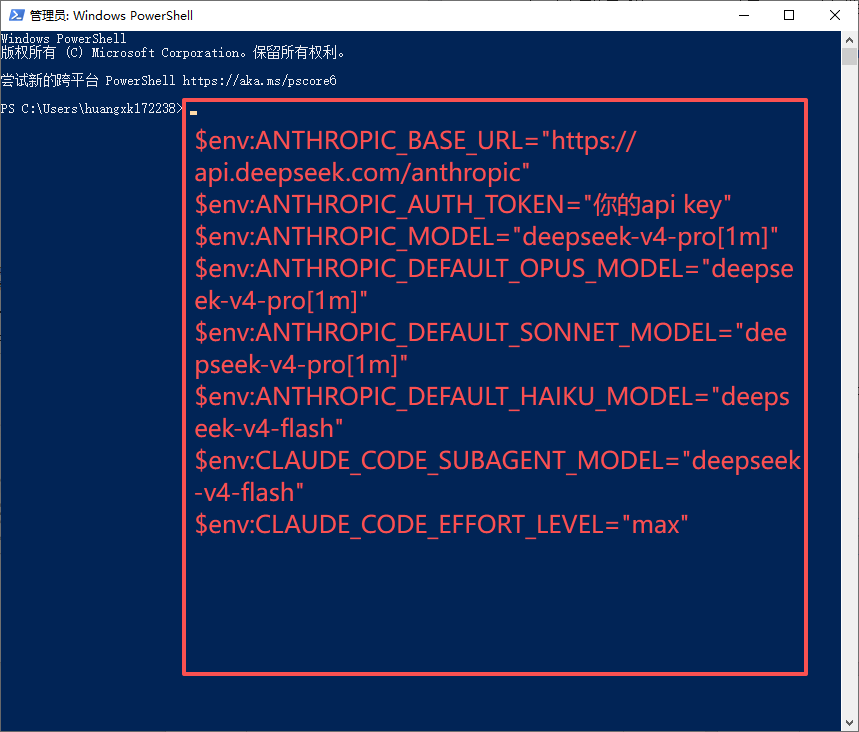
图 3-B1：PowerShell 命令输入
⚠️
注意
以上变量环境配置好后，在终端输入 claude 就可以运行 Claude Code：
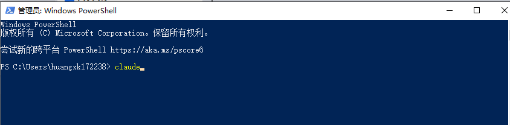
图 3-B2：在终端输入 claude 运行
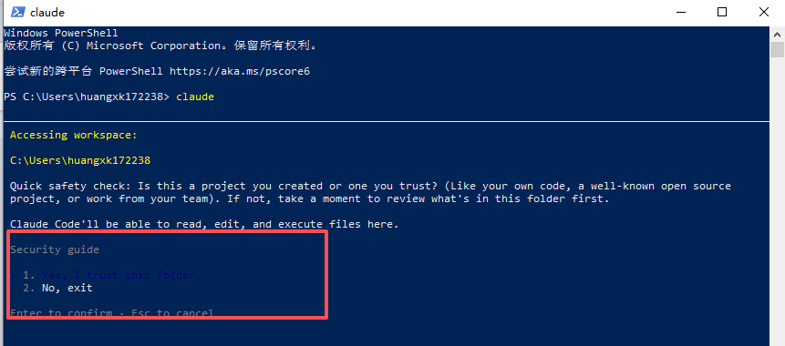
图 3-B3：确认启动 Claude Code
选择 Yes 确认：
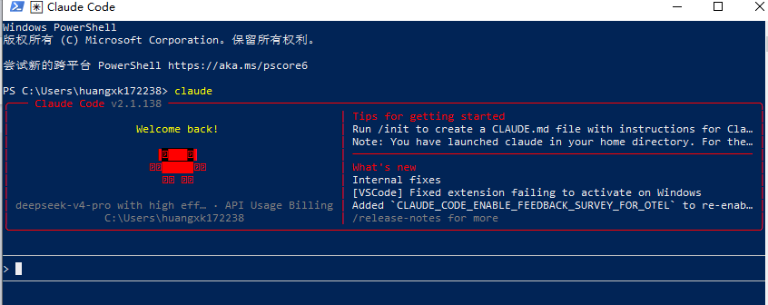
图 3-B4：选择 Yes 确认启动
方法 C：进阶方法 — VS Code 插件 + Settings 文件
打开安装好的 Visual Studio Code，在左侧插件栏中安装 Claude Code 官方插件。
⚠️
关于 Settings 文件
Settings 文件名没有扩展名（不是 settings.json）。如果目录下没有该文件，需要手动新建一个 txt 文档并重命名为 settings。
回到电脑端，打开用户目录，找到 .claude 母根目录，找到 settings 文件。若无 settings 文件，需要手动新建一个 txt 文档并命名为 settings（无扩展名）。
图 3-C1：VS Code 插件安装
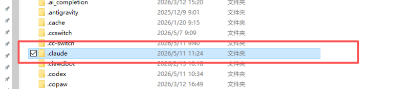
图 3-C2：VS Code 中 .claude 目录与 settings 文件
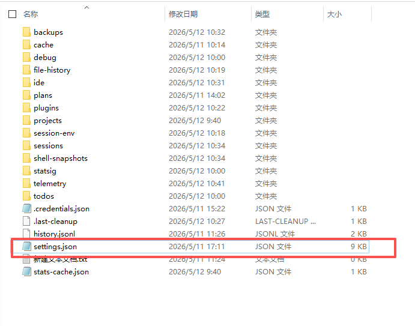
图 3-C3：新建 settings 文件
打开 settings 文件，复制以下配置代码：
JSON — .claude/settings
{
"hasCompletedOnboarding": true,
"env": {
"ANTHROPIC_BASE_URL": "https://api.deepseek.com/anthropic",
"ANTHROPIC_AUTH_TOKEN": "你的api key",
"ANTHROPIC_MODEL": "deepseek-v4-pro",
"CLAUDE_CODE_DISABLE_OFFICIAL_AUTH": "1"
}
}
⚠️
重要
ANTHROPIC_AUTH_TOKEN 必须替换为你自己的 API Key。
保存 settings 文件后，重启 Anthropic 服务，打开 Claude Code 便可使用。
图 3-C4：配置完成后重启即可使用
三种方法对比
| 维度 | 方法 A：CCSwitch | 方法 B：命令行 | 方法 C：VS Code 插件 |
|---|---|---|---|
| 难度 | ⭐ 低 | ⭐⭐⭐ 中高 | ⭐⭐ 中等 |
| 适合人群 | 新手 / 小白用户 | 有命令行经验的开发者 | 熟悉 VS Code 的用户 |
| 灵活性 | 一般 | 最高 | 较高 |
| 配置方式 | 图形化界面，无需输入命令 | 逐条输入环境变量 | 手动编辑 JSON 文件 |
| 推荐指数 | ⭐⭐⭐⭐⭐ | ⭐⭐⭐ | ⭐⭐⭐⭐ |
4
基础办公提效
看到这里可能有点难以理解，没关系，就看懒人方法 A 就好了。到这一步，你就初步完成了 Vibe Coding 的第一步。
当然，传统的办公工作到这里就可以结束了，Claude Code 已经足以满足你大部分日常工作需求，可以利用 AI 来提升工作效率了。
🎯
里程碑
恭喜！你已经拥有了一个世界顶尖级别的 AI Agent。每天打开 VS Code 中的 Claude Code，用自然语言让它帮你写代码、分析数据、撰写文档、处理文件，实现日常办公全面提效。
💡
小贴士
如果你只需要日常办公提效，到这里就可以停下了。但如果你希望进一步利用 AI 进行 UI/UX 设计工作，请继续阅读下面的设计工作流章节。
5
设计工作流 — Figma
在我们有了基础的 Claude Code 这个世界顶尖级别的 Agent 后，我们就需要为它接入手和脚。Claude Code 相当于是大脑，这个"手"的角色，我们选择 Figma。
MCP（Model Context Protocol）可以理解为一个链接 Claude 和 Figma 的枢纽——通过 MCP，Claude Code 可以直接读取 Figma 设计稿、修改设计元素、创建组件、应用样式等。
需要先去 Figma 官网下载 Figma 桌面客户端，再去闲鱼购买一个 Figma 的年度教育会员账号（几十元即可获得完整专业功能）。
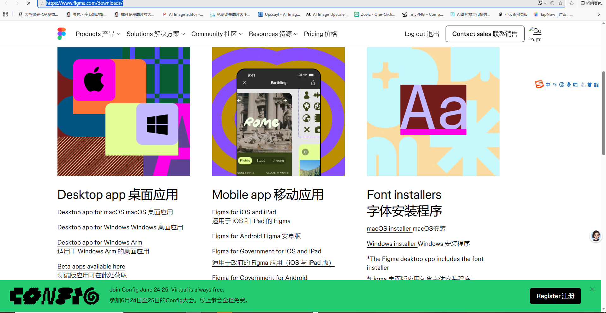
图 5-1：Figma 官网下载页面
官网：https://www.figma.com/downloads/
⚠️
账号建议
需要使用 MCP 调用的话，个人使用免费版的 Figma 是不够的，建议去闲鱼等平台购买 Figma 教育会员账号，价格实惠（几十元/年），提供完整的团队协作功能和组件库访问权限。
6
搭建 Figma MCP
直接对话 Claude Code，让它帮你搭建好 Figma MCP。等待 AI 验证通过 OAuth 认证后，就可以实现 Figma 和 Claude Code 的流畅协作体验——真正意义上实现"你做决策，AI 做执行"。
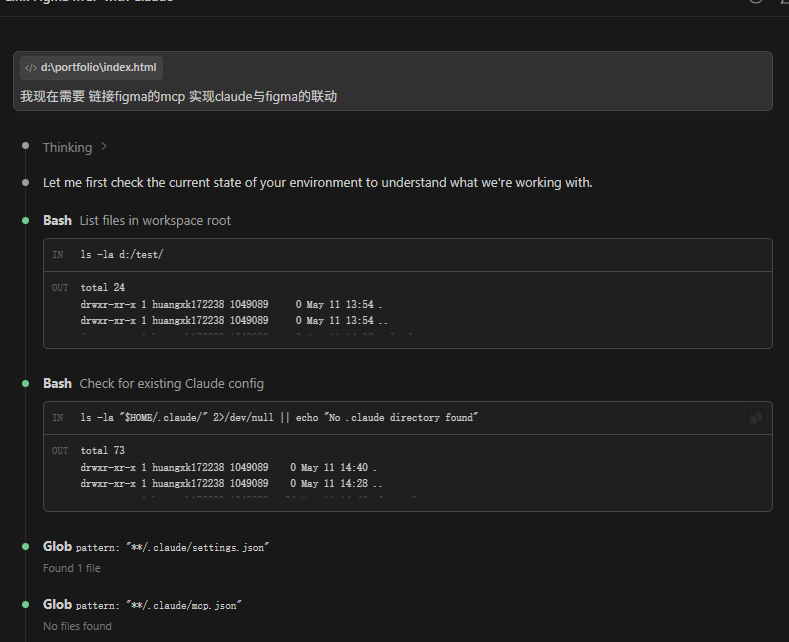
图 6-1：直接对话 Claude Code 搭建 Figma MCP
🔐
OAuth 认证说明
MCP 使用 OAuth 2.0 标准协议进行安全认证。你只需在浏览器中点击"允许授权"，AI 会自动完成后续所有配置，无需手动编辑任何配置文件。
由 Claude Code 代码形式生成的网页 UI/UX 在 Figma 中都是以可编辑的设计元素体现的，这直接节省了设计师本身的时间，设计师可以把更多时间花在自身创意上。
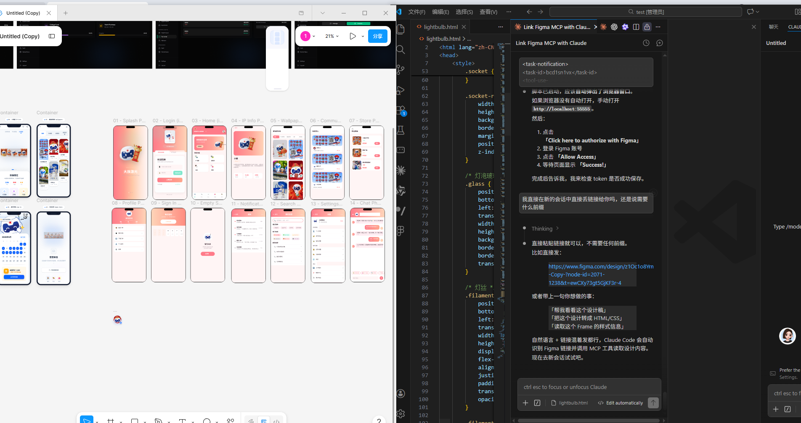
图 6-2：Claude Code + Figma MCP 工作流最终效果
7
完整工作流总览
至此，你已经完整搭建了从环境配置到设计协作的全链路 Vibe Coding 工作流。
端到端工作流管道
┌──────────────────────────────────────────────────────────────┐
│ Step 1: 安装 MiniMax Agent │
│ ├─ 下载并安装 MiniMax Agent 桌面端 │
│ ├─ 自动安装 Claude Code + CCSwitch + VS Code │
│ └─ 配置基础环境变量 │
├──────────────────────────────────────────────────────────────┤
│ Step 2: 购买大模型 API │
│ ├─ DeepSeek / Qwen 平台注册并购买 API Key │
│ └─ 绕过 Anthropic 对中国大陆的网关限制 │
├──────────────────────────────────────────────────────────────┤
│ Step 3: 配置模型（三选一） │
│ ├─ 方法 A: CCSwitch 图形化配置（推荐新手） │
│ ├─ 方法 B: PowerShell 命令行配置 │
│ └─ 方法 C: VS Code 插件 + settings 文件 │
├──────────────────────────────────────────────────────────────┤
│ Step 4: Claude Code 日常办公 │
│ ├─ 代码编写 · 文档撰写 · 数据分析 · 文件批处理 │
│ └─ 用自然语言驱动 AI 完成日常工作 │
├──────────────────────────────────────────────────────────────┤
│ Step 5: 下载 Figma + 准备账号 │
│ ├─ 官网下载 Figma 桌面客户端 │
│ └─ 闲鱼购买教育会员账号（可选，几十元/年） │
├──────────────────────────────────────────────────────────────┤
│ Step 6: 搭建 Figma MCP │
│ ├─ 对话 Claude Code 自动配置 MCP 连接 │
│ ├─ OAuth 认证通过后即可使用 │
│ └─ 设计稿 ↔ 代码 双向同步 │
├──────────────────────────────────────────────────────────────┤
│ 🎯 最终形态："你做决策，AI 做执行" │
│ ├─ 需求描述 → Claude Code 理解 → Figma 生成设计稿 │
│ ├─ Figma 设计稿 → Claude Code 识别 → 自动生成前端代码 │
│ └─ 迭代修改 → 自然语言指令 → AI 实时响应 │
└──────────────────────────────────────────────────────────────┘最佳实践 & 注意事项
💡
先跑通再优化
不要试图一次完美配置所有环节。建议先用方法 A（CCSwitch）快速跑通 Claude Code 基础功能，确认可用后再逐步探索设计工作流。
⚠️
API Key 安全
切勿将 API Key 上传到 GitHub 等公开平台。建议定期在 DeepSeek 后台轮换 API Key，避免因泄露导致费用异常。
🔧
模型选择策略
复杂任务使用 deepseek-v4-pro（对应 Opus/Sonnet 级别），简单任务使用 deepseek-v4-flash（对应 Haiku/SubAgent 级别），在效果和成本之间取得平衡。
🚀
持续迭代
AI 工具生态日新月异。建议关注 MiniMax Agent、Claude Code、Figma 的官方更新日志，及时升级到最新版本以获得更好的体验和更多功能。